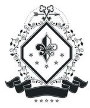
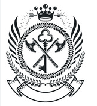
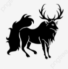
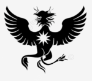
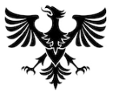
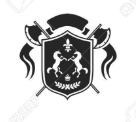

CASAS E DINASTIAS

O Sistema de Dinastias representa o "DNA" do seu poder político no Kigen RPG. Cada família detém um território estratégico e possui uma especialização única. O sucesso de uma Dinastia depende da gestão de três pilares fundamentais: Tesouro, Segurança e Diplomacia.
PAÍS DO FOGO
Casa Ichijō
Domínio: Burocracia Central.
Bônus (Canal Direto): Decretos de nível nacional não precisam passar pela aprovação de conselheiros; são executados imediatamente após a assinatura do Daimyō.
Casa Tachi
Domínio: Logística e Suprimentos.
Bônus (Rota de Ouro): Caravanas de suprimentos (militares ou alimentares) são 50% mais rápidas e têm custo operacional reduzido pela metade. Bônus de +20% na eficácia do Banquete Real.
Casa Shiba
Domínio: Inteligência Militar.
Bônus (Sentinela): Acesso ao Sistema de Sussurros (Inteligência) nível 2 pelo custo de nível 1. Recebe alertas de movimentação de tropas inimigas com 24h de antecedência.
Casa Tokugawa
Domínio: Fortificações.
Bônus (Mestres Construtores): Redução de 30% no tempo de conclusão de Editais de Infraestrutura. Obras de fortificação recebem +50% de resistência a dano e sabotagens.

Brasão SagaraCasa Sagara
Domínio: Recrutamento.
Bônus (Legião de Ferro): Custo de recrutamento de NPCs (Samurais e Capangas) reduzido em 30%. O limite máximo de tropas controladas pela Casa é 20% maior.
PAÍS DA ÁGUA
Casa Fujiwara
Domínio: Capital insular e frotas.
Bônus (Dízimo dos Mares): Recebe uma taxa passiva de 10% sobre todas as transações comerciais marítimas que cruzam o domínio do país.
Casa Date
Domínio: Estaleiros e fortalezas costeiras.
Bônus (Forja Naval): Navios mercantes e projetos de defesa costeira custam 30% menos para construir e não possuem custo de manutenção semanal.
Casa Minamoto
Domínio: Mercado Negro e Submundo.
Bônus (Sombra e Maré): Acesso total ao Mercado Negro com taxas de transação 50% menores. Contratos de assassinato realizados pela Casa são 100% anônimos (impossíveis de rastrear).

Brasão HōjōCasa Hōjō
Domínio: Diplomacia de Estado.
Bônus (Punho de Veludo): +30% de bônus em negociações de reféns e hostilidades. Quebrar um tratado com a Casa Hōjō resulta em uma multa automática de 500k Ryos para o infrator.
Casa Utsunomiya
Domínio: Saúde Pública.
Bônus (Medicina de Estado): Os hospitais sob jurisdição da casa possuem 20% de eficiência extra em regeneração de HP de tropas. O custo de antídotos/remédios é 30% menor.
PAÍS DA TERRA

Brasão KitabatakeCasa Kitabatake
Domínio: Infraestrutura de Segurança.
Bônus (Baluarte): Projetos de infraestrutura (muros, cofres, abrigos) possuem o dobro de resistência mecânica contra sabotagens e espionagem nível 2.
Casa Takeda
Domínio: Metalurgia e Pesquisa.
Bônus (Forja de Guerra): Redução de 50% no tempo de Pesquisa (Fase I do Engenheiro) e no custo de produção de armas em massa para exércitos.

Brasão ImagawaCasa Imagawa
Domínio: Vigilância de Fronteira.
Bônus (Vigilante): Revela automaticamente qualquer player invasor ao entrar em qualquer setor de fronteira da Casa, sem necessidade de abrir Chamado de Espionagem.
Casa Mōri
Domínio: Leis e Exclusão.
Bônus (Muralha Política): Decretos de fechamento de fronteira, censura ou expulsão de estrangeiros possuem custo zero de influência política.
Casa Hatakeyama
Domínio: Anexação Territorial.
Bônus (Expansão de Terras): Redução em 2 dias do tempo necessário para subir o Nível de Conquista de territórios neutros (Anexação).
PAÍS DO RELÂMPAGO
Casa Hosokawa
Domínio: Monitoramento.
Bônus (Dashboard Real): Visualiza métricas de suprimentos e movimentação de tropas de províncias vizinhas em tempo real, sem atraso de espionagem.
Casa Uesugi
Domínio: Energia e Transporte.
Bônus (Vetor): Renda passiva massiva derivada da venda de energia. Redução de 50% no custo e no tempo de viagem entre províncias que possuem torres da casa.
Casa Chōsokabe
Domínio: Comércio de Tecnologia.
Bônus (Patente de Ouro): Lucro de 50% extra na venda de tecnologia (próteses, rádios, hardware) para players ou vilas ocultas. Caravanas de exportação são isentas de taxas.
Casa Satake
Domínio: Alianças Estratégicas.
Bônus (Diplomacia Tecno): Cada aliança formal mantida com uma família estrangeira gera um bônus passivo semanal de +10k Ryos e +5% de prestígio.

Brasão AshikagaCasa Ashikaga
Domínio: Relação com Kages.
Bônus (Ponte Oculta): O Kage da Vila Oculta do país recebe um bônus de +100 Score se a Casa Ashikaga aprovar suas missões. A casa ganha influência prioritária na seleção de candidatos à Anbu.
PAÍS DO VENTO
Casa Toyotomi
Domínio: Capital e Tesouro.
Bônus (Mão de Midas): Aumenta a arrecadação de impostos de todas as províncias do país em 15%. Bônus de +200k Ryos ao iniciar a temporada.
Casa Maeda
Domínio: Manipulação de Mercado.
Bônus (Especulador): Podem decretar escassez artificial de qualquer recurso (minério, comida, etc.) uma vez por semana, forçando o preço de mercado a dobrar por 48h.
Casa Honda
Domínio: Logística no Deserto.
Bônus (Nômade Veloz): As rotas da casa são imunes a debuffs climáticos (tempestades de areia). Viagens de longa distância (Inter-provinciais) são 40% mais rápidas.

Brasão ShimazuCasa Shimazu
Domínio: Espionagem Profunda.
Bônus (Sombras do Deserto): Taxa de sucesso de 100% em espionagem nível 1 e 2. Espiões da casa capturados nunca podem ser ligados à família.
Casa Amako
Domínio: Contratos de Mercenários.
Bônus (Mercado Aberto): Pode contratar Nukenin ou Mercenários pagando 30% menos do valor base do contrato. Contratos de defesa privada têm 50% mais de duração.